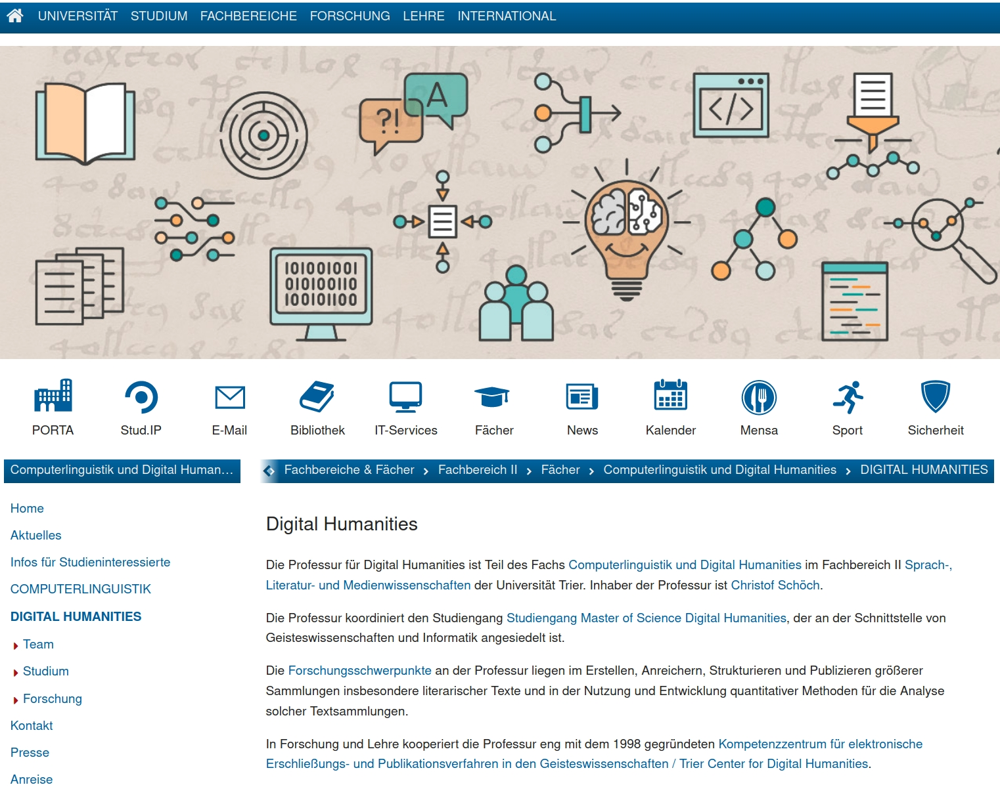
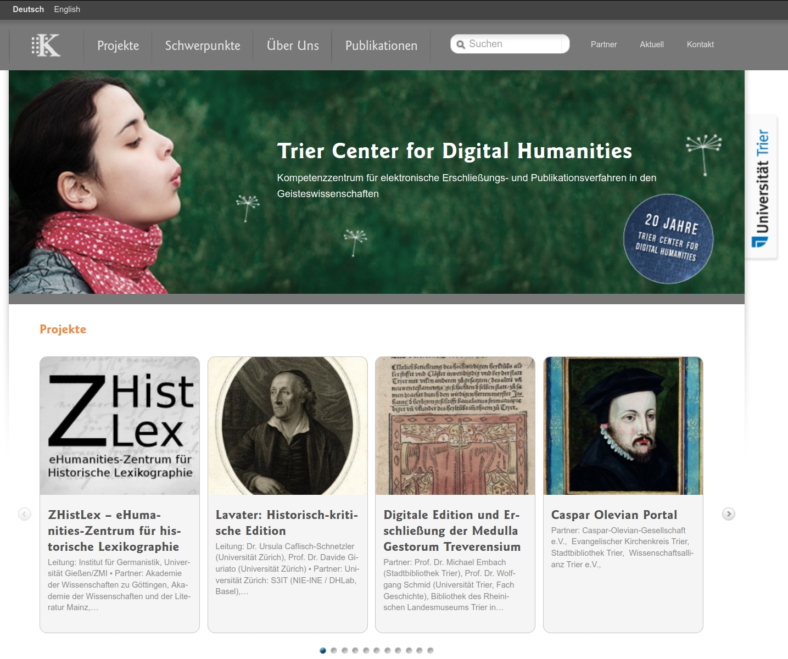

#### Bachelor of Science:<br/>Sprache, Technologie und Medien,<br/><strong>Schwerpunkt 'Digital Humanities'</strong> <br/> <hr/> <br/> <p><strong>Computerlinguistik und Digital Humanities<br/>Fachbereich II, Universität Trier</strong> <br/> <br/> <p><a href="https://dh.uni-trier.de/">dh.uni-trier.de</a></p> <hr/> <img height="70" data-src="img/basics/uni-trier.png"> -- ## Was ist Digital Humanities? --- #### Definition bei Wikipedia <p><img height="500" data-src="img/wikipedia_digital-humanities-DE.png"></img></p> --- ### 817 Definitionen <br/> <br/> <br/> <a href="http://whatisdigitalhumanities.com/">whatisdigitalhumanities.com</a> <br/> <br/> --- #### Sphärenmodell <p><img height="500" data-src="img/sahle-sphären.png"></img></p> <p>(Patrick Sahle 2013)</p> -- ## Vorstellung des Teams --- #### Digital Humanities @ Trier   <br/>Professur für Digital Humanities Trier Center for Digital Humanities --- #### Lehrende in den DH <img height="150" data-src="img/schoech.jpg"></img> </img> <img height="150" data-src="img/baresch.jpg"></img> </img> <img height="150" data-src="img/burch.jpg"></img> </img> <br/> * Prof. Dr. Christof Schöch * Silvia Carlitz, M.A. (Sekretariat) * Ariadne Baresch, M.A. (Studienberatung) * Dr. Maria Hinzmann (TCDH) * Dr. Thomas Burch (TCDH) * Julia Röttgermann, M.A. (TCDH) * N.N. (TCDH) -- ## Vorstellung des Bachelor-Studiengangs --- #### Überblick <img height="500" data-src="img/STeM-DH_Modulübersicht.png"> --- #### Modulbereiche im Überblick <br/> <small> | Modulbereich | FS | LP | |---------------------------------------------------------------------|:---:|:--:| | Sprach- und kommunikationswissenschaftliche Grundlagen (gemeinsam) | 1-4 | 50 | | Digitale Grundlagen und Methoden (je nach Schwerpunkt) | 1-4 | 40 | | Module des Schwerpunkts Digital Humanities (Schwerpunkt) | 3-6 | 55 | | Wahlpflichtbereich mit Modulen aus den Informatikwissenschaften | 5-6 | 20 | | Bachelorabschlussmodlul: Bachelorarbeit | 6 | 15 | </small> --- #### Schwerpunkt DH: 5 Module <br/> <small> | Modul | FS | SWS | LP | Seminare | |----------------------------------------|:---:|:---:|:--:|--------------------------------------------------------------| | Digitalisierung und Digitale Edition | 3-4 | 4 | 10 | - Digitalisierung von Kulturgut<br/>- Digitale Edition | | Methoden der Datenanalyse | 5-6 | 4 | 10 | - Aktuelle Themen der DH<br/>- Quantitative Analysemethoden | | Projektmodul Digital Humanities | 5 | 1 | 15 | - Begleitseminar zur Projektarbeit<br/>- Projektarbeit | | Basismodul Geisteswissenschaften | 3 | 4 | 10 | Einführende Veranstaltungen aus einem gw. Fach | | Aufbaumodul Geisteswissenschaften | 4 | 4 | 10 | Weiterführende Veranstaltungen aus einem gw. Fach | </small> --- #### Modulbereich Digitale Grundlagen und Methoden * Gemeinsames Programm (FS 1-2) * Modul Algorithmische Methoden * Modul Informationssysteme * Modul Algorithmen und Datenstrukturen für Text, Medien und Wissen * Grundzüge der Statistik<br/><br/> * DH-spezifisches Programm (FS 3-4) * Modul Datenbanken * Modul Data Mining --- ##### Bachelorabschluss-Modul * Bei Schwerpunkt DH sollte die Bachelorarbeit in diesem Bereich geschrieben werden * Auch im Kontext eines laufenden Forschungsprojekts an der Professur oder dem TCDH möglich * 15 LP